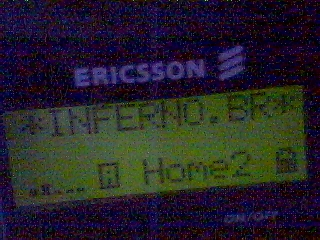

My cellular have a Y2K Bug?
eita.. o bug foi o maior fiasco... nenhum blackout, nenhum missel nuclear lançado, nenhum aviao caiu, nenhum caixa eletronico cuspiu notas.... mas a imprensa faturou com sua cobertura apocaliptica do "evento", milhões foram investidos e nem os teste do governo que falharam um dia antes assustaram... Peter Norton vibrou com seu CD que nao fazia porra nenhuma vendido a larga escala e la no "vale do silicio", onde eu trampo, tinha varios geradores nas ruas.. tudo p/ nada.
dinheiro p/ nada.....
foda-se, ta sobrando mesmo, ne gov.... campanha na TV e o cacete... sabia q nao ia dar em nada, mas fica anunciando o seu "exito"...
"o novo milenio chegou, e hora de recomeçar...."